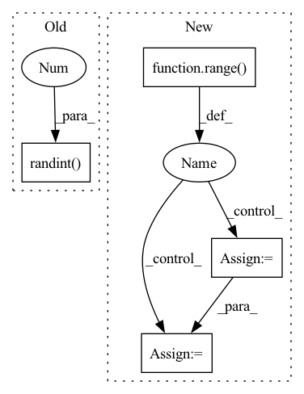

Pattern ID :11684

Before Change
else:
cloned = x.copy()
len_spectro = cloned.shape[0]
ts = np.random.randint(0, self.T, size=(self.n_time_masks, 2))
for t, mask_end in ts:
// avoid randint range error
if len_spectro - t <= 0:
continue
After Change
cloned = x if self.inplace else x.copy()
max_frames = cloned.shape[0]
max_t = int(max_frames * self.max_t_ratio)
for i in range(self.n_time_masks):
start = random.randint(0, max_frames - 1)
length = random.randint(1, max_t)
end = min(max_frames, start + length)
if replace_with_zero:
cloned[start:end, :] = 0
else:
In pattern: SUPERPATTERN
Frequency: 3
Non-data size: 4
Instances
Fragment ID: 39517770
Project Name: yeyupiaoling/masr
Commit Name: 15d97fe0e0042abc1e6bfedadb35dc826ed4aed3
Time: 2022-09-28
Author: yeyupiaoling@foxmail.com
File Name: masr/data_utils/augmentor/spec_augment.py
M Class Name: SpecAugmentor
N Class Name: SpecAugmentor
M Method Name: mask_time(3)
N Method Name: mask_time(3)
M Parent Class: object
N Parent Class: object
M File Name: masr/data_utils/augmentor/spec_augment.py
N File Name: masr/data_utils/augmentor/spec_augment.py
M Start Line: 132
M End Line: 152
N Start Line: 115
N End Line: 125
'>
Before Change
// batch-wise random inverse normal vector (prob: 0.5)
if random_inv:
random_mask = torch.randint(0, 2, (group_xyz.size(0), 1)).float() * 2. - 1.
random_mask = random_mask.to(unit_nor.device)
if not is_group:
unit_nor = unit_nor * random_mask
After Change
batch_prob = np.random.rand(offset.shape[0]) < 0.5
random_mask = []
sample_offset = [0] + list(offset.cpu().numpy())
for idx in range(len(sample_offset) - 1):
sample_mask = torch.ones((sample_offset[idx+1] - sample_offset[idx], 1), dtype=torch.float32)
if not batch_prob[idx]:
sample_mask *= -1
random_mask.append(sample_mask)
random_mask = torch.cat(random_mask, dim=0).to(unit_nor.device)
// random_mask = torch.randint(0, 2, (group_xyz.size(0), 1)).float() * 2. - 1.
'>
Fragment ID: 39517771
Project Name: hancyran/repsurf
Commit Name: e320999634bd03b5020e1af0092663c02c862ba8
Time: 2022-09-18
Author: ranhaoxi@gmail.com
File Name: segmentation/modules/recons_utils.py
M Class Name: AnonimousClass
N Class Name: AnonimousClass
M Method Name: cal_normal(4)
N Method Name: cal_normal(3)
M Parent Class:
N Parent Class:
M File Name: segmentation/modules/recons_utils.py
N File Name: segmentation/modules/recons_utils.py
M Start Line: 28
M End Line: 29
N Start Line: 10
N End Line: 37
'>
Before Change
cloned = x.copy()
num_mel_channels = cloned.shape[1]
fs = np.random.randint(0, self.F, size=(self.n_freq_masks, 2))
for f, mask_end in fs:
f_zero = random.randrange(0, num_mel_channels - f)
mask_end += f_zero
After Change
cloned = x if self.inplace else x.copy()
max_freq = cloned.shape[1]
max_f = int(max_freq * self.max_f_ratio)
for i in range(self.n_freq_masks):
start = random.randint(0, max_freq - 1)
length = random.randint(1, max_f)
end = min(max_freq, start + length)
if replace_with_zero:
cloned[:, start:end] = 0
else:
'>
Fragment ID: 39517774
Project Name: yeyupiaoling/masr
Commit Name: 15d97fe0e0042abc1e6bfedadb35dc826ed4aed3
Time: 2022-09-28
Author: yeyupiaoling@foxmail.com
File Name: masr/data_utils/augmentor/spec_augment.py
M Class Name: SpecAugmentor
N Class Name: SpecAugmentor
M Method Name: freq_mask(3)
N Method Name: freq_mask(3)
M Parent Class: object
N Parent Class: object
M File Name: masr/data_utils/augmentor/spec_augment.py
N File Name: masr/data_utils/augmentor/spec_augment.py
M Start Line: 100
M End Line: 116
N Start Line: 92
N End Line: 98